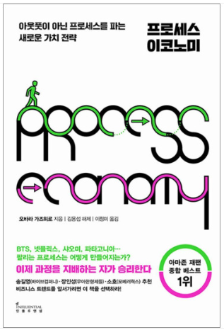

프로세스 이코노미
결과보다 과정을 파는 시대, 매일 독서 인증으로 과정을 공유하며 나만의 성장 팬덤을 함께 만들어 갑니다.
안내 · 챌린지 규칙
- 마감은 24시 정각입니다. 지각 시 누락으로 체크되니 유의해주세요.
- 누적 미인증 5회 시 킥아웃됩니다. 개인적인 사정으로 인증이 어렵다면 최소 3일 전 운영진께 요청해주세요.
- 같은 날짜에 다시 제출하면 기존 인증이 수정됩니다. (중복으로 기록되지 않습니다.)
- 반드시 당일 일정을 드롭다운 박스에서 선택해서 인증해 주셔야 합니다. (예: 2일차 분량을 자정 넘겨 인증하는 경우, 3일차가 아닌 2일차로 선택)
- 다만 마감(24:00)을 넘긴 제출은 어떤 날짜를 선택하든 계속 미인증(X)으로 집계됩니다. 지각으로 판정된 글에는 "지각" 표시가 함께 붙습니다.
오늘의 인증
매일 밤 24시 정각까지 제출해 주세요. 미인증으로 처리되니 미리 인증해주세요.
인증 피드 0명
좌우로 넘기거나 화살표로 날짜를 옮기며 이전 인사이트를 확인할 수 있습니다. 전체 보기를 누르면 새 창에서 지금까지의 모든 인증글을 한눈에 볼 수 있습니다.
-
👑 1등: -
🏆 명예의 전당 Top 5
매일 엄지척(👍)을 가장 많이 받아 1등을 달성한 누적 횟수입니다.
- 집계된 순위가 없습니다.
📊 전체 진행현황 0명
참여자 전체의 인증 현황을 한눈에 볼 수 있는 대시보드입니다.
0%
오늘 인증률
0
인증 완료 인원
0
킥아웃 위험 인원
나의 진행 현황
0
인증
0
미인증
0
면제
0
연속 인증
0%
인증률
O 인증
X 미인증
P 면제
· 예정